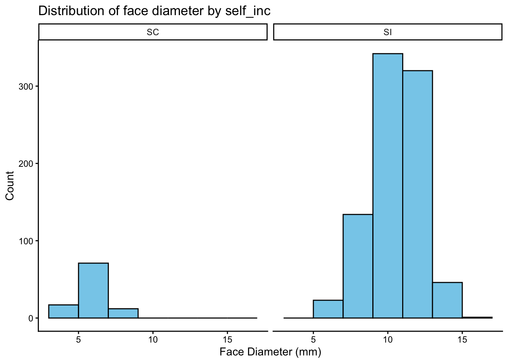
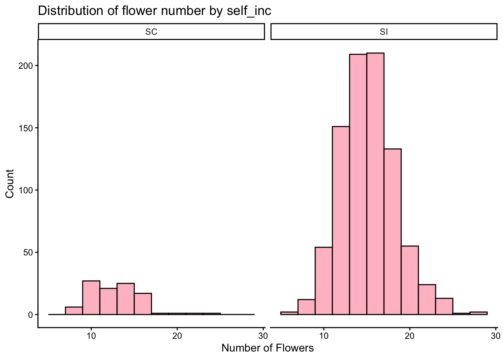
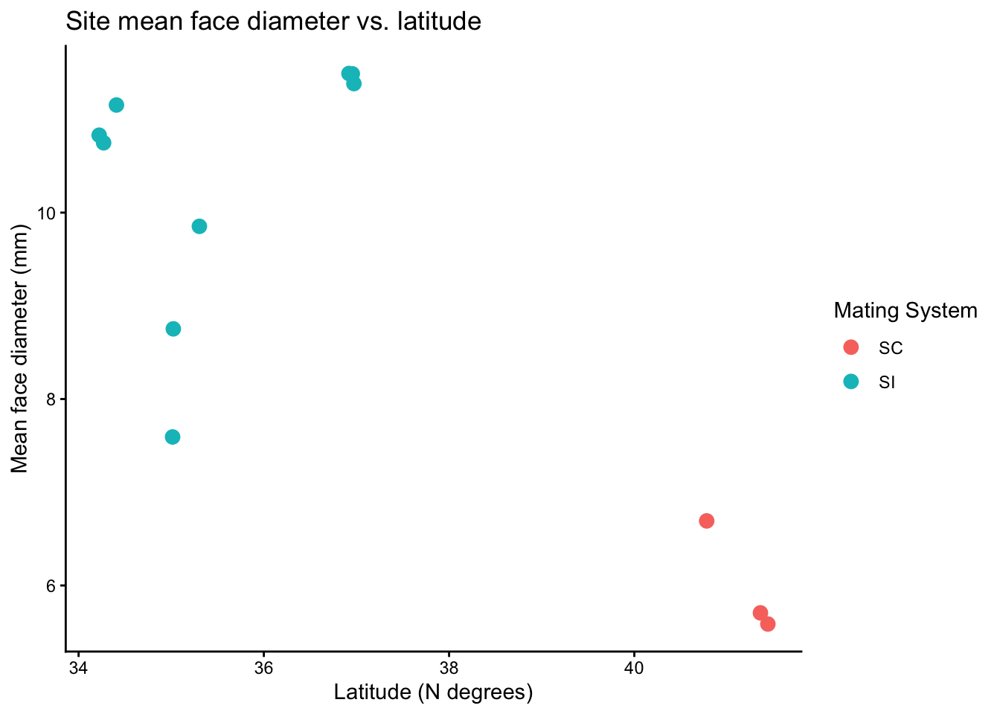
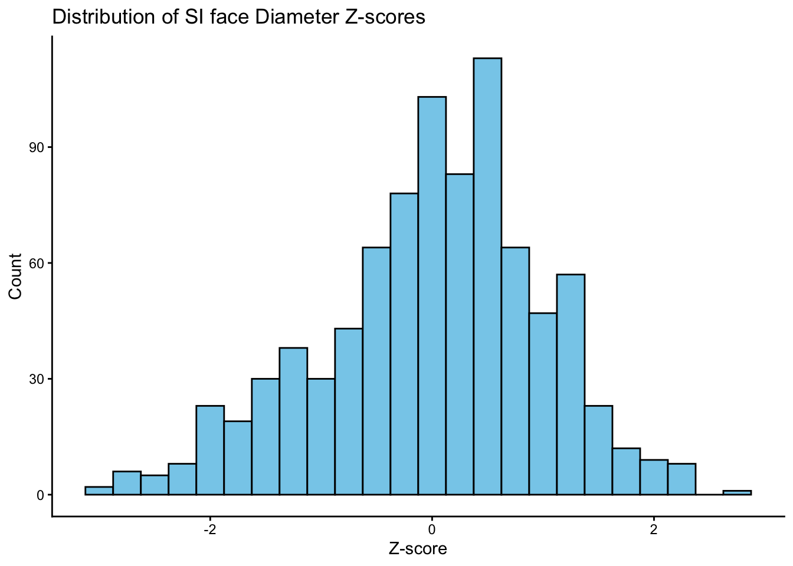
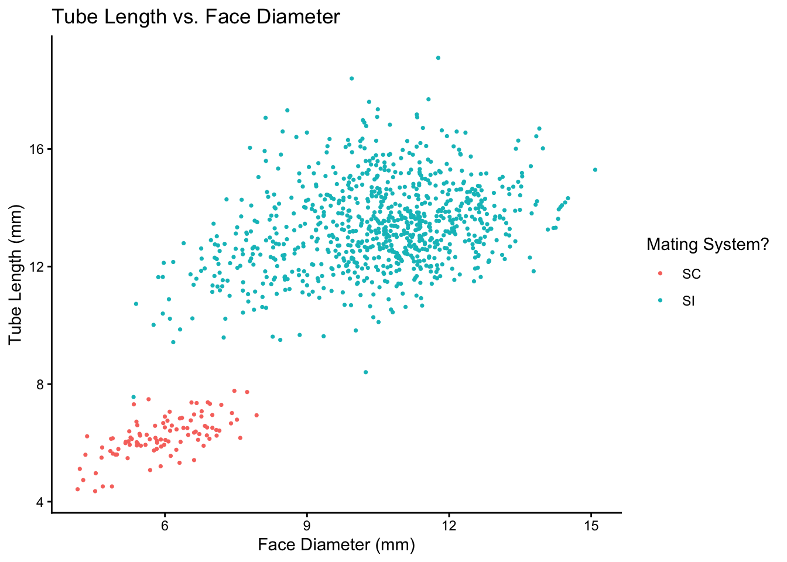

# Name - Queen's Student Number
# 1. Ziadie Diebel - 20463388
# 2. Member2 - Student Number
# 3. Member3 - Student Number
# 4. Member4 - Student Number
# 5. Member5 - Student Number
# 6. Member6 - Student NumberBIOL343 Coding Challenge 4
BIOL343 Coding Challenge 4
Group Members
DO THIS FIRST
Copy and paste this into your R Console to start positpal, but replace FILENAME.Rmd with the name you are going to use for the .R or .Rmd file you are going to upload (rename the template first, e.g. Group_#_CC4.Rmd, and use that exact name). Do not include it as a code chunk.
install.packages("remotes")
remotes::install_url("https://quantitative.bio/downloads/positpal.tar.gz", upgrade = "never")
positpal::start("Group_2_CC4.Rmd")Before you run it: create or open an R project folder so that it is your working directory, then save this file in that folder under the name you will upload, and check that autosave is on (File → Auto Save). See OnQ and use the positpal chatbot if you are having trouble with positpal.
Part 1 — Import and inspect
The data file is data/AbroniaFloralData.csv: one row per plant, from 12 coastal sites, with the mating system of the site (self_inc: SI or SC), the site’s latitude, and four floral traits. The instructions describe the study and the two hypotheses. Do not edit the file by hand.
1. Import the data
Import the observations and save it as an object called floral_data.
floral_data=read.csv("data/AbroniaFloralData.csv")2. Inspect the data
Check the object with dim(), head(), str() and summary(). Look for the usual problems: columns of the wrong type, and missing values.
dim(floral_data)[1] 966 8head(floral_data) self_inc site latitude_N plant_id umbel_angle_deg flower_number
1 SI CMGA 34.22204 CMGA.2010.1 140 18
2 SI CMGA 34.22204 CMGA.2010.10 90 8
3 SI CMGA 34.22204 CMGA.2010.11 120 18
4 SI CMGA 34.22204 CMGA.2010.12 180 22
5 SI CMGA 34.22204 CMGA.2010.13 130 21
6 SI CMGA 34.22204 CMGA.2010.14 95 11
face_diam_mm tube_length_mm
1 11.24 13.080
2 10.51 12.315
3 11.14 13.880
4 10.49 15.585
5 10.76 14.615
6 11.02 15.965str(floral_data)'data.frame': 966 obs. of 8 variables:
$ self_inc : chr "SI" "SI" "SI" "SI" ...
$ site : chr "CMGA" "CMGA" "CMGA" "CMGA" ...
$ latitude_N : num 34.2 34.2 34.2 34.2 34.2 ...
$ plant_id : chr "CMGA.2010.1" "CMGA.2010.10" "CMGA.2010.11" "CMGA.2010.12" ...
$ umbel_angle_deg: int 140 90 120 180 130 95 105 130 110 115 ...
$ flower_number : int 18 8 18 22 21 11 10 16 14 12 ...
$ face_diam_mm : num 11.2 10.5 11.1 10.5 10.8 ...
$ tube_length_mm : num 13.1 12.3 13.9 15.6 14.6 ...summary(floral_data) self_inc site latitude_N plant_id
Length :966 Length :966 Min. :34.22 Length :966
N.unique : 2 N.unique : 12 1st Qu.:34.41 N.unique :966
N.blank : 0 N.blank : 0 Median :35.30 N.blank : 0
Min.nchar: 2 Min.nchar: 4 Mean :36.21 Min.nchar: 11
Max.nchar: 2 Max.nchar: 5 3rd Qu.:36.95 Max.nchar: 13
Max. :41.44
umbel_angle_deg flower_number face_diam_mm tube_length_mm
Min. : 30.0 Min. : 6.00 Min. : 4.156 Min. : 4.357
1st Qu.:100.0 1st Qu.:13.00 1st Qu.: 8.835 1st Qu.:11.992
Median :110.0 Median :15.00 Median :10.501 Median :13.096
Mean :111.9 Mean :15.44 Mean :10.069 Mean :12.628
3rd Qu.:125.0 3rd Qu.:17.00 3rd Qu.:11.499 3rd Qu.:14.172
Max. :225.0 Max. :28.00 Max. :15.084 Max. :19.100
NAs :5 Question 1: In statistical terms, what is the statistical population in this study, and what is the sample? Give one reason the sample might not be a random, unbiased sample of that population.
Answer: The statistical population is all individual Abronia plants growing in nature, whereas the sample if the Abronia plants specificically measured and referenced in this data set the 966. The sample might not be completely random or unbiased as they where collected from only 12 clustered sites rather and a more broad environment range. The plants sampled from the same sites share soil, climate characteristics, and genetic traits leading to them being more similar and the overall collected data lacking some of the diversity we might seen in a nature while looking at more spaced out/ diversified sites.
Part 2 — Distributions
3. Plot frequency distributions
Plot the distributions of face_diam_mm, with facets so that SI and SC plants are in separate panels. Choose an appropriate binwidth that shows the shape of the data distribution, add axis labels with units and a title, and use a ‘clean’ theme suitable for publication. Then do the same for flower_number, with binwidth = 1. If R prints a message about bins = 30, you have not set the binwidth; the chunk option message=FALSE (already set on these chunks) hides messages like that in the knitted file.
# Importing necessary libraries
library(tidyverse)
# Histogram for face diameter (face_diam_mm)
ggplot(data=floral_data, aes(x=face_diam_mm)) + geom_histogram(binwidth=2, colour="black", fill="skyblue") + facet_wrap(~self_inc) +
labs(
x = "Face Diameter (mm)",
y = "Count",
title = "Distribution of face diameter by self_inc"
) +
theme_classic()
# Histogram for Flower Number (flower_number)
ggplot(data=floral_data, aes(x=flower_number)) + geom_histogram(binwidth=2, colour="black", fill="pink") + facet_wrap(~self_inc) +
labs(
x = "Number of Flowers",
y = "Count",
title = "Distribution of flower number by self_inc"
) +
theme_classic()
Question 2: Of the three common population distributions (Gaussian, Poisson, binomial), which one is the best model for face_diam_mm, and which for flower_number? Explain with respect to the type of data as well as the shape of the histogram.
Answer: face_diam_mm: The data in this category is a continuous measurement and has decimal values. Looking at the graphs both for SC and SI the data seems to have a bell curve shape for both. Where one bar is the mean/ most common value and the bars around it are less/ lower. These characteristics suggest that Gaussian is the best model for face_diam_mm as it is usually used for continuous data.
flower_number: The data in this category appears to be a count and contains no decimal values. Looking at the graph for SC and SI the number of flowers appears to be more skewed towards the lower count of flowers, where the graph eventually decreases tappering off as the number of flowers gets higher. These characteristics suggest that Poisson is the best model for flower_number as it is usually used for count data.
4. Mean, standard deviation and coefficient of variation
Make two vectors, SI and SC, containing the face diameters of the SI plants and of the SC plants. For each vector, calculate the sample size, the mean, the standard deviation, and the coefficient of variation.
# Vector for face_diam_mm
SI=floral_data$face_diam_mm[floral_data$self_inc == "SI"]
SC=floral_data$face_diam_mm[floral_data$self_inc == "SC"]
# Calculate metrics for SI
samplesize_SI = length(SI)
mean_SI = mean(SI, na.rm = TRUE)
sd_SI = sd(SI, na.rm = TRUE)
coeffvar_SI = (sd_SI / mean_SI) * 100
# Calculate metrics for SC
samplesize_SC = length(SC)
mean_SC = mean(SC, na.rm = TRUE)
sd_SC = sd(SC, na.rm = TRUE)
coeffvar_SC = (sd_SC / mean_SC) * 100
# Print Results
calc_summary= data.frame(
SelfInc = c("SI", "SC"),
SampleSize = c(samplesize_SI, samplesize_SC),
Mean = c(mean_SI, mean_SC),
SD = c(sd_SI, sd_SC),
Coeff.Var = c(coeffvar_SI, coeffvar_SC)
)
print(calc_summary) SelfInc SampleSize Mean SD Coeff.Var
1 SI 866 10.543959 1.6935162 16.06148
2 SC 100 5.960045 0.8930541 14.98402Question 3: The two standard deviations are very different, but the two coefficients of variation are almost the same. What does that tell you about how variation in flower size relates to mean flower size?
Answer: This tell us that flower size variation scales with relation to the average size of the flower. Though larger SI flowers have a higher sd their variability relative to their size is almost identical. Therefore bigger flowers naturally have more spread but both type show the same variation relative to their average size being smalle or larger.
5. Trait means by mating system and by site
Report the sample size and the mean of each of the four traits for SI and for SC plants, using dplyr commands. One trait has missing values, so the code must handle NA.
# Summarize the sample size and mean for each of the four floral traits
trait_summary= floral_data |>
group_by(self_inc) |>
summarise(
sample_size = n(),
mean_umbel_angle = mean(umbel_angle_deg, na.rm = TRUE),
mean_flower_num = mean(flower_number, na.rm = TRUE),
mean_face_diam = mean(face_diam_mm, na.rm = TRUE),
mean_tube_length = mean(tube_length_mm, na.rm = TRUE)
)
print(trait_summary)# A tibble: 2 × 6
self_inc sample_size mean_umbel_angle mean_flower_num mean_face_diam
<chr> <int> <dbl> <dbl> <dbl>
1 SC 100 88.3 13.3 5.96
2 SI 866 115. 15.7 10.5
# ℹ 1 more variable: mean_tube_length <dbl>Now make a second summary with one row per site: the site’s mating system, its latitude, the number of plants and the mean face diameter. Then plot mean face diameter (y) against latitude (x), one point per site, coloured by mating system, with axis labels with units, a legend title and a clean theme.
# summarize dataset by site
site_summary= floral_data |>
group_by(site) |>
summarise(
self_inc= first(self_inc),
latitude_N = first(latitude_N),
plant_num= n(),
mean_face_diam = mean(face_diam_mm, na.rm = TRUE)
)
print(site_summary)# A tibble: 12 × 5
site self_inc latitude_N plant_num mean_face_diam
<chr> <chr> <dbl> <int> <dbl>
1 CBVA SI 34.3 65 10.7
2 CCOA SI 34.4 90 11.2
3 CFAA SC 40.8 30 6.69
4 CGBA SC 41.4 35 5.71
5 CGN2A SI 35.0 85 8.75
6 CGNA SI 35.0 60 7.59
7 CMGA SI 34.2 91 10.8
8 CMNA SI 36.9 130 11.5
9 COSA SC 41.4 35 5.59
10 CSEA SI 37.0 95 11.4
11 CSPA SI 35.3 125 9.85
12 CWRA SI 37.0 125 11.5 # Plot mean face diameter against latitude by site
ggplot(data=site_summary, aes(x=latitude_N, y=mean_face_diam, colour=self_inc)) +
geom_point(size=3) +
labs(
x = "Latitude (N degrees)",
y = "Mean face diameter (mm)",
colour= "Mating System",
title = "Site mean face diameter vs. latitude"
) +
theme_classic()
Question 4: Do the four traits differ between SI and SC plants in the direction predicted by the second hypothesis in the instructions? Which trait shows the largest relative difference?
Answer: Yes, all four traits do differ in the predicted direction. SC plants have smaller trait values across the board (smaller umbel angle, fewer flowers, smaller face diameter, and shorter tube length) compared to SI plants. Face diamater shows the larger relative drecreasing, dropping by over 40% from SI to Sc plants (from 10.5mm down to 6.0mm).
Part 3 — From the sample to the population
6. Standard error and confidence interval
For SI and for SC, calculate the standard error of the mean and the 95% confidence interval from the equations: \(SE = s / \sqrt{n}\) and \(CI = \bar x \pm 1.96 \times SE\). Print both intervals.
# Standard error and 95% CI for SI
se_SI=sd_SI / sqrt(samplesize_SI)
ci_lower_SI = mean_SI-1.96*se_SI
ci_upper_SI=mean_SI + 1.96*se_SI
# Standard error and 95% CI for SC
se_SC=sd_SC / sqrt(samplesize_SC)
ci_lower_SC = mean_SC-1.96*se_SC
ci_upper_SC=mean_SC + 1.96*se_SC
# Print the calculation results below
calc2_summary = data.frame(
SelfInc = c("SI", "SC"),
StandardError = c(se_SI, se_SC),
CILower = c(ci_lower_SI, ci_lower_SC),
CIUpper = c(ci_upper_SI, ci_upper_SC)
)
print(calc2_summary) SelfInc StandardError CILower CIUpper
1 SI 0.05754802 10.431165 10.656753
2 SC 0.08930541 5.785006 6.135084Question 5: What does each confidence interval represent? Do the two intervals overlap, and what does that suggest about the two populations?
Answer: The confidence interval represents the range of values within which we are 95% confident the true population mean face diameter lies for that self_inc (SI and SC). The 2 confidence intervals do not appear to overlap (SI ranges from 10.43-10.66 and SC ranges from 5.79-6.14). The following suggests that self_inc for SI and SC plants come from 2 distinct populations with significantly different average flower sizes, with the SI flowers being larger than those that are SC.
7. The central limit theorem
Set the seed with set.seed(343). Use sample() to draw a random sub-sample of 10 plants from SI, then one of 100, then one of 500. For each sub-sample report the mean, the standard deviation and the width of the 95% confidence interval (upper limit minus lower limit), and compare them with the values for all 866 SI plants from Sections 4 and 6.
set.seed(343)
# Draw random subsamples from SI
sub_10 = sample(SI, size=10)
sub_100 = sample(SI, size=100)
sub_500 = sample(SI, size=500)
# sub_10 calculations
sub_10_samplesize = length(sub_10)
sub_10_mean = mean(sub_10)
sub_10_sd = sd(sub_10)
sub_10_se = sub_10_sd/ sqrt(sub_10_samplesize)
sub_10_ciwidth = 2 * 1.96 *sub_10_se
# sub_100 calculations
sub_100_samplesize = length(sub_100)
sub_100_mean = mean(sub_100)
sub_100_sd = sd(sub_100)
sub_100_se = sub_100_sd/ sqrt(sub_100_samplesize)
sub_100_ciwidth = 2 * 1.96 *sub_100_se
# sub_500 calculations
sub_500_samplesize = length(sub_500)
sub_500_mean = mean(sub_500)
sub_500_sd = sd(sub_500)
sub_500_se = sub_500_sd/ sqrt(sub_500_samplesize)
sub_500_ciwidth = 2 * 1.96 *sub_500_se
# CI <- c(x - 1.96 * se, x + 1.96 * se)
# CI[2] - CI[1] # RSCC’s example
# full vector calculations
SI_samplesize = length(SI)
SI_mean = mean(SI)
SI_sd = sd(SI)
SI_se = SI_sd/ sqrt(SI_samplesize)
SI_ciwidth = 2 * 1.96 *SI_se
# Comparison & Printing results out
SI_comparison = data.frame(
Sample = c("Subsample 10", "Subsample 100", "Subsample 500", "Full SI Sample"),
Sample_Size = c(sub_10_samplesize, sub_100_samplesize, sub_500_samplesize, SI_samplesize),
Mean = c(sub_10_mean, sub_100_mean, sub_500_mean, SI_mean),
SD = c(sub_10_sd, sub_100_sd, sub_500_sd, SI_sd),
CI_Width = c(sub_10_ciwidth, sub_100_ciwidth, sub_500_ciwidth, SI_ciwidth)
)
print(SI_comparison) Sample Sample_Size Mean SD CI_Width
1 Subsample 10 10 10.48767 1.905873 2.3625449
2 Subsample 100 100 10.34448 1.739815 0.6820074
3 Subsample 500 500 10.58424 1.675787 0.2937784
4 Full SI Sample 866 10.54396 1.693516 0.2255883Question 6: As the sub-sample grows, which of the three numbers stays roughly where it is and which one shrinks? Explain why (hint: How does this relate to the standard error?)
Answer: The mean (ranges from 10.48-10.54) and standard deviation (ranges from 1.91-1.68) appear to stay roughly where they are as the sub-sample grows. The confidence interval width (ranges from 2.36-0.23) appears to shrink dramatically. The confidence interval width is dependant on the standard error calculation so as the same size n =10, 100, 500, etc. gets bigger the standard deviaition is being divided by a bigger number leading to the standard error being a smaller value. This shortens the confidence interval and leads to a more precise mean value.
Part 4 — Probability and tests
8. Z-scores and probability
Convert SI to z-scores and plot a histogram of them. Then convert the mean of the SC plants to a z-score relative to the SI sample (subtract the SI mean, divide by the SI standard deviation), and use pnorm() to calculate the probability of drawing a plant with a face diameter that small or smaller from the SI population.
# Convert SI values to z-scores
SI_z=(SI-mean(SI)) / sd(SI)
# Plot histogram of SI z-scores
ggplot(data.frame(z=SI_z), aes(x=z)) +
geom_histogram(binwidth=0.25, colour="black", fill="skyblue") +
labs(
x = "Z-score",
y = "Count",
title = "Distribution of SI face Diameter Z-scores"
) +
theme_classic()
# Calculate SC mean z-score relative to SI population
SC_mean=mean(SC)
z_SC_mean = (SC_mean - mean(SI))/ sd(SI)
# Calculate thbe probability of drawing a plant with a diameter this small or smaller
p_value=pnorm(z_SC_mean)
# print results
print(z_SC_mean)[1] -2.706743print(p_value)[1] 0.003397337Question 7: Is this a one-tailed or a two-tailed question, and why? What does the probability say about whether SC flowers are simply small SI flowers?
Answer: This is a one-tailed test because we are calculating the probability of drawing a plant with a face diameter thats small or smaller from the SI population, meaning we are only checking the lower tail of the curve. The probability of this happening is extremely unlikely with a p-value of 0.0034 or 0.34% since SI plants are typically larger. This also proves that SC are from a seperate smaller population versys being small SI flowers.
9. Two-sample t-test
Test whether SI and SC plants differ in face diameter with a t-test. Report t, the degrees of freedom, the p-value and the 95% confidence interval of the difference. Then calculate t yourself from the two-sample equation, \(t = (\bar x - \bar y) / \sqrt{SE_x^2 + SE_y^2}\), using the standard errors from Section 6, and check that it matches.
# standard two-sample t-test
t_test_result=t.test(SI, SC)
print(t_test_result)
Welch Two Sample t-test
data: SI and SC
t = 43.146, df = 194.45, p-value < 2.2e-16
alternative hypothesis: true difference in means is not equal to 0
95 percent confidence interval:
4.374381 4.793447
sample estimates:
mean of x mean of y
10.543959 5.960045 # Extract key test metrics
t_val = t_test_result$statistic
df_val = t_test_result$parameter
p_val = t_test_result$p.value
ci_diff = t_test_result$conf.int
# summarize and print the results
# Manual calculations to ensure there is no errors
SC_samplesize = length(SC)
SC_sd = sd(SC)
se_SC = SC_sd/ sqrt(SC_samplesize)
t_manual = (mean_SI - mean_SC) / sqrt(se_SI^2 + se_SC^2)
# summarize and print the results again
t_summary = data.frame(
Metric = c("t-statistic", "Degrees of Freedom (df)", "p-value", "95% CI Lower", "95% CI Upper"),
R_t.test = c(t_val, df_val, p_val, ci_diff[1], ci_diff[2] ),
Manual = c(t_manual, "NA", "NA", "NA", "NA")
)
print(t_summary) Metric R_t.test Manual
1 t-statistic 4.314622e+01 43.1462209851848
2 Degrees of Freedom (df) 1.944517e+02 NA
3 p-value 1.575798e-101 NA
4 95% CI Lower 4.374381e+00 NA
5 95% CI Upper 4.793447e+00 NAQuestion 8: Every statistical test has assumptions. Name two assumptions of the t-test and say, in one sentence each, whether you think the Abronia data meet them.
Answer: An assumption the test has it the data will follow the normal bell-shaped distrubution you typically see. We see that this is met as the face diameter is a continuous measurement that follows the usually bell curve format. Another assumption the test has is thet each plant is measured independent of the others. This assumption is not met as plants were collected from 12 distinct group sites so plants from the same site where exposed to many of the same circumstances meaning they are not completely independent.
10. Face diameter against tube length
Plot tube_length_mm (y) against face_diam_mm (x), coloured by self_inc, with axis labels with units, a legend title, and a clean theme. Give the figure a caption with the chunk option fig.cap = "...", and hide the code with echo = FALSE so that only the figure and its caption appear in the knitted document.

Question 9: Using everything above — the site plot in Section 5, the trait means, the t-test and this figure — what do the data say about the two hypotheses in the instructions? Answer in a short paragraph.
Answer: The data supports the geographic distribution hypothesis that the SC populations are located farther north near the species range limit, where low mate density and fewer pollinators make self-fertilization beneficial. The floral trait reduction hypothesis is also supported. Once SC evolves, plants invest less in attracting pollinators. SC plants have much smaller flower face diameters and shorter tube lengths than SI plants creating two completely seperate clusters.
DO THIS LAST
When your document is finished, knit it, open the .html in a web browser and print it to PDF (File → Print → Save as PDF; name it Group_#_CC4.pdf). Then copy and paste this into the R Console to stop positpal and create your coding log. Do not include it as a code chunk.
positpal::stop_capture()
positpal::export_capture()export_capture() prints the name and location of the my-capture-YYYYMMDD-HHMMSS.zip it creates beside this file. Each group member uploads their own .zip to the “CC4 — Coding Log (individual)” dropbox on OnQ; the group’s .Rmd and the .pdf (not the .html — OnQ shows uploaded HTML as source code, not as a page) go to your section’s TUT02-CC4 or TUT03-CC4 folder. Submissions without the log are incomplete. If export_capture() fails, zip the .capture folder yourself and upload that instead.